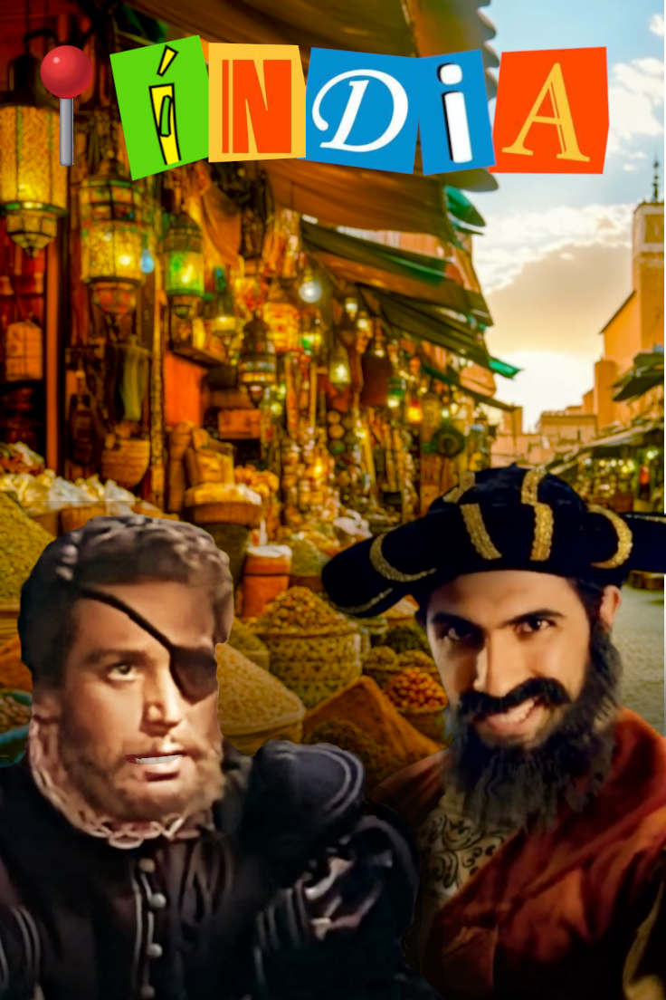
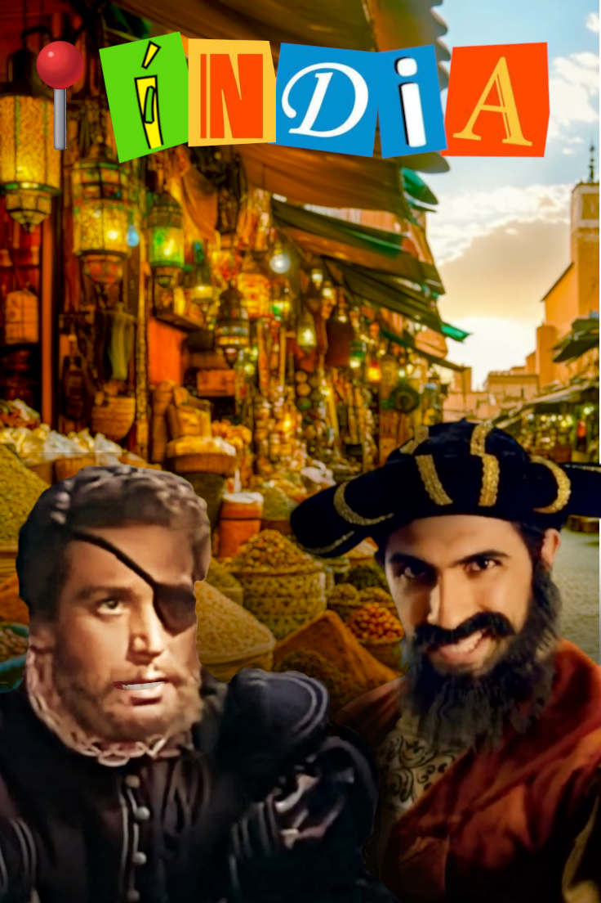

Este projeto consistiu na criação de uma composição visual que articulasse:
- A figura histórica de Camões (retratada de forma artística);
- Elementos que remetem para os feitos gloriosos dos portugueses descritos em Os Lusíadas;
- Um estilo visual moderno e cativante, inspirado nas tendências das redes sociais, especialmente o formato criativo observado em vídeos do TikTok.
Os alunos utilizaram o GIMP para aplicar técnicas de montagem, sobreposição de camadas, recorte de elementos, filtros artísticos e composição cromática, desenvolvendo competências técnicas e estéticas no âmbito da disciplina de Tecnologias Aplicadas e do DAC da turma.
üëâ Clique nas imagens abaixo para visualizar o trabalho:


 
